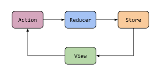

前言
这篇文章还没整理，待续。
Clean架构
什么是Clean架构
Clean 架构是由 Uncle Bob 在 2012 年发表的针对 Web App 的架构设计，他提出只需秉持分层与依赖规则的原则，依赖需要遵循内层不能依赖外层的规则。

这张图解释如下：
- Enterprise Business Rules: 业务对象
- Application Business Rules: 用于处理业务对象，是业务逻辑和 DataMapper(让 UI 层拿到的数据能直接使用) 所在，也称为 Interactor
- Interface Adapters: 接口转换，Presenters 和 Controllers 就在这一层
- Frameworks and Drivers: 这里是所有具体的实现了
看看 Clean 与 MVP 的关系(类比 MVVM 架构)：

项目实例
下面通过一个实例在 Android 中应用 Clean 架构。
Data层
1 | class HelloService { |
这里 HelloRepository 实现了 IRepository 接口，但是 IRepository 并不是数据层的，它是 domain 层的接口，即以接口进行关联，但内容独立。
Domain层
1 | interface IRepository { |
Domain 层应该用依赖注入的方式拿到 IRepository 实例，这样 Domain 层则跟 Data 层没有直接关联了。
View&ViewModel层
1 | // ViewModel |
小结
优点
- 测试更容易
- 漏洞更容易被隔离
- 新功能也很容易添加
- 代码更易读和可维护
- 单向依赖、数据驱动编程
缺点
- 结构复杂
- 粒度太细
- Usecase 的复用率极低
- 急剧的增加类和重复代码
建议大型项目才考虑使用该架构。
Redux架构
Redux 是前端开发中的一种架构，是 Flux 架构的一个变种，用来提供状态管理。我们在 Android 中也可以参考其设计思想，设计出符合 Android 使用场景的 Redux 架构，网上也有一些相关的开源代码库。
考虑一个场景，在一个 Feed 流中有许多视频，每个视频 item view 都会展示该视频的点赞数，点击进入视频详情页可以点赞，详情页展示新的点赞数，返回到 Feed 流时也能看到 item view 点赞数的变化。
首先返回到 Feed 流后重新进行网络请求得到最新的点赞数显然是不太可取的，那么就可以考虑在点赞的时候更新本地内存中存储的 Feed item 对象中的点赞数，至于这个 item 对象存储在哪里呢？谁能对它进行更改呢？此时可以考虑 Redux 架构的设计思路。
我们看一下 Redux 的几个对象：

单向数据流
数据流向从 Store 流向 View，不允许双向流动，单向数据流让所有状态的改变可追踪，易溯源。
唯一数据源SSOT(Single source of truth)
唯一数据源让整个应用状态都保存在一个对象(Store)中，保证各个页面数据展示的一致性。
状态是可读的
非可读的状态会带来一些问题：
- 多线程场景下，数据的随意修改容易引入线程安全问题
- 在响应式架构里，数据 state 的变化是可观察的，随意修改会破坏这种可观察性
Redux 只能通过返回一个新的 state 来更新数据状态，这个过程通过纯函数实现。
纯函数Reducer
不依赖外部、不影响外部：
- 不依赖外部变量，只依赖输入的参数，任何情况下，只要参数相同，函数返回值也总是相同的。
- 无副作用。纯函数不会修改参数，不会影响外部状态。
写在最后
写代码的时候，记得三思而后行，想一想你写的代码是不是在它该在的位置，是不是以该有的形式存在的。
架构不是一蹴而就的，希望我们有一天的时候，能够从自己写的代码中找到架构的成就感，而不是干几票就跑路的想法，这个系列应该会一直更新，记录我在架构之路上学习的脚印儿，一件一件扒开架构神秘的面纱。